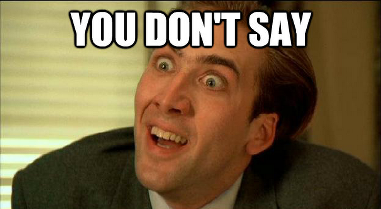

És mostmár elképzelhetetlen mennyiségű mémeket gyártanak és legalabb havonta jön egy olyan videó vagy kép ami több millió emberhez is elér és tele van vele minden kép/videó megosztó oldal.
Először a mémek e-mailen és egyéb levelező oldalakon kezdtek el terjedeni. Elsőként az Useneten 1990 környékén kezdtek el ilyen rövid vicces videókat vagy képeket megosztani egymással az ismerősök, de amint ugye megjelentek az olyan oldalak mint például a facebook, instagram, akkor már nem csak barátoknak lehetett küldeni ilyeneket hanem bárki más láthatta.
Kezdetben azért volt jó ilyen privátban elküldeni ezeket a mémeket, mert akinek elküldted az az ember valószínüleg értette és értékelte a poént és nem kellet elmagyarázni a vicc lényegét. Aztán elkezdték nem csak privátban küldeni, hanem publikusan is kitenni a memeket és ezzel kezdtek el főleg terjedni.
Ahogy említettem később már a megjelent közösségi oldalakon is elterjedtek a mémek és ezáltal nagyon sok új és új fajta mém jelent meg, amik akár lehettek vicces életszituációk, paródia valakiről/valamiről. Viszont voltak olyan viccek amik át léptek pár határt ezért, már a közösségi oldalak figyelik, hogy milyen fajta viccek is kerülnek ki és amik esetleg túl durvág vagy sérőek azokat letiltják.
És mostmár elképzelhetetlen mennyiségű mémeket gyártanak és legalabb havonta jön egy olyan videó vagy kép ami több millió emberhez is elér és tele van vele minden kép/videó megosztó oldal.